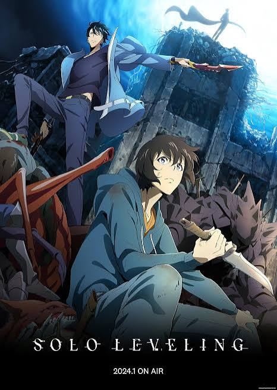

Solo Leveling
Action, Fantasy, Adventure
humanity’s weakest E-rank Hunter. After a brutal double-dungeon trap nearly kills his party, he is chosen by a mysterious program called "the System" to become a "Player". Unlike others, he can infinitely increase his power, eventually becoming the all-powerful Shadow Monarch.